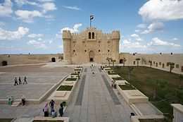
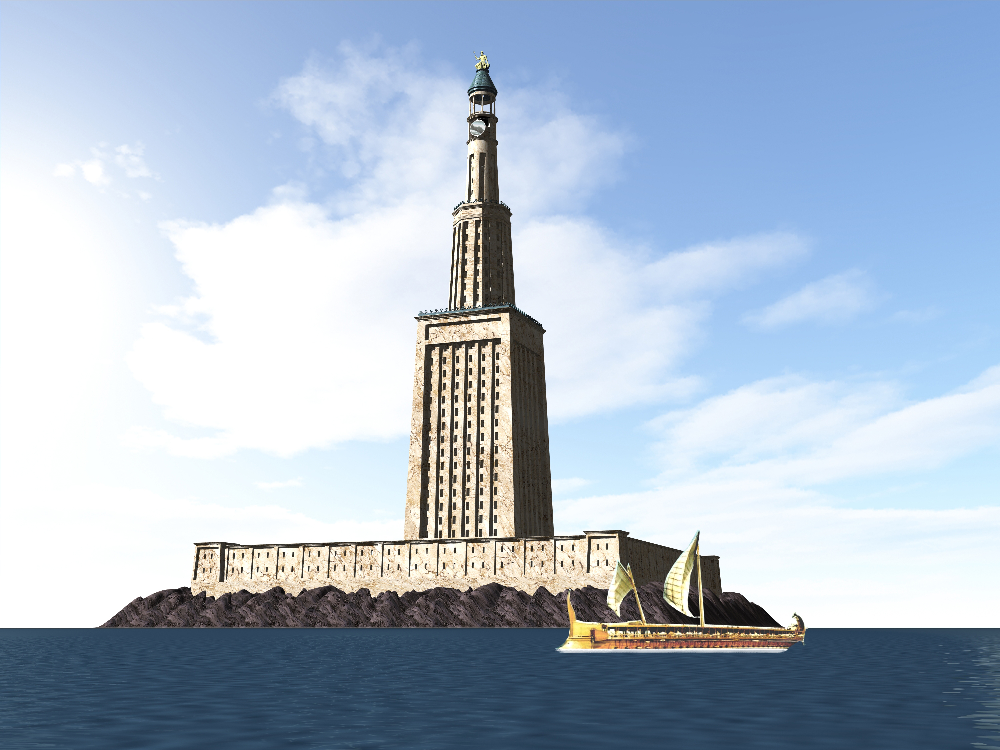
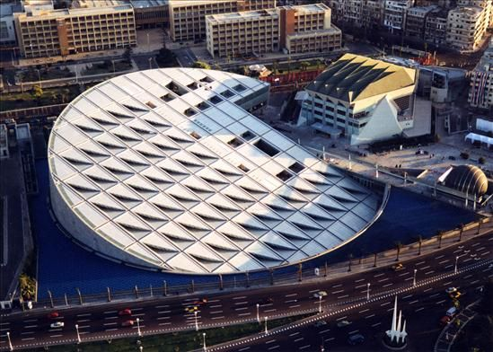
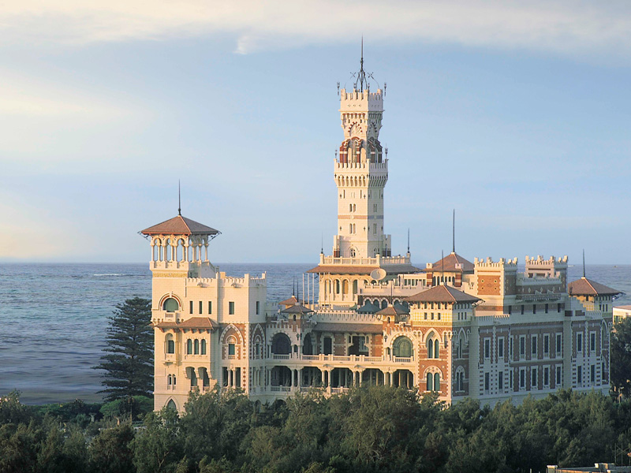
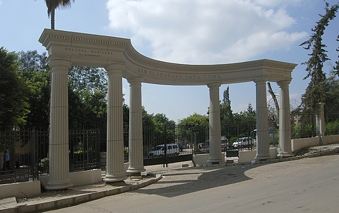
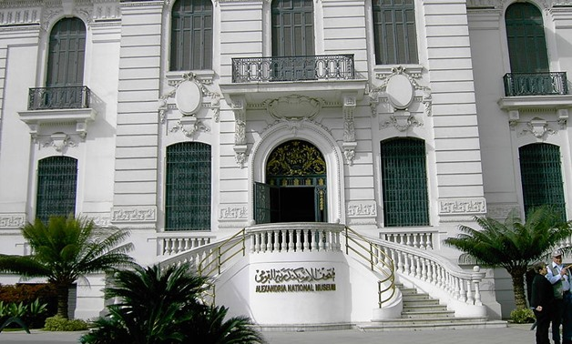
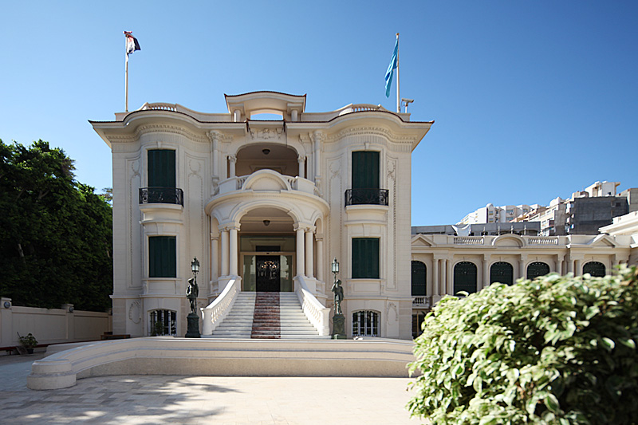

| Citadel of Qaitbay  |
is a 15th-century defensive fortress located on the Mediterranean sea coast, in Alexandria, Egypt. It was established in 1477 AD (882 AH) by Sultan Al-Ashraf Sayf al-Din Qa'it Bay. The Citadel is situated on the eastern side of the northern tip of Pharos Island at the mouth of the Eastern Harbour. |
|
Lighthouse of Alexandria
 |
(sometimes called the Pharos of Alexandria) was a lighthouse built by the Ptolemaic Kingdom, during the reign Ptolemy II Philadelphus (280–247 BC) which has been estimated to be 100 metres (330 ft) in overall height. One of the Seven Wonders of the Ancient World, for many centuries it was one of the tallest man-made structures in the world. Badly damaged by three earthquakes between AD 956 and 1323, it then became an abandoned ruin. It was the third longest surviving ancient wonder (after the Mausoleum at Halicarnassus and the extant Great Pyramid of Giza), surviving in part until 1480, when the last of its remnant stones were used to build the Citadel of Qaitbay on the site. In 1994, French archaeologists discovered some remains of the lighthouse on the floor of Alexandria's Eastern Harbour.In 2016 the Ministry of State of Antiquities in Egypt had plans to turn submerged ruins of ancient Alexandria, including those of the Pharos, into an underwater museum. |
|
Library of Alexandria  |
The Great Library of Alexandria in Alexandria, Egypt, was one of the largest and most significant libraries of the ancient world. The Library was part of a larger research institution called the Mouseion, which was dedicated to the Muses, the nine goddesses of the arts.The idea of a universal library in Alexandria may have been proposed by Demetrius of Phalerum, an exiled Athenian statesman living in Alexandria, to Ptolemy I Soter, who may have established plans for the Library, but the Library itself was probably not built until the reign of his son Ptolemy II Philadelphus. The Library quickly acquired a large number of papyrus scrolls, due largely to the Ptolemaic kings' aggressive and well-funded policies for procuring texts. It is unknown precisely how many such scrolls were housed at any given time, but estimates range from 40,000 to 400,000 at its height. Alexandria came to be regarded as the capital of knowledge and learning, in part because of the Great Library. Many important and influential scholars worked at the Library during the third and second centuries BC, including, among many others: Zenodotus of Ephesus, who worked towards standardizing the texts of the Homeric poems; Callimachus, who wrote the Pinakes, sometimes considered to be the world's first library catalogue; Apollonius of Rhodes, who composed the epic poem the Argonautica; Eratosthenes of Cyrene, who calculated the circumference of the earth within a few hundred kilometers of accuracy; Aristophanes of Byzantium, who invented the system of Greek diacritics and was the first to divide poetic texts into lines; and Aristarchus of Samothrace, who produced the definitive texts of the Homeric poems as well as extensive commentaries on them. During the reign of Ptolemy III Euergetes, a daughter library was established in the Serapeum, a temple to the Greco-Egyptian god Serapis. Despite the widespread modern belief that the Library was "burned" once and cataclysmically destroyed, the Library actually declined gradually over the course of several centuries, starting with the purging of intellectuals from Alexandria in 145 BC during the reign of Ptolemy VIII Physcon, which resulted in Aristarchus of Samothrace, the head librarian, resigning from his position and exiling himself to Cyprus. Many other scholars, including Dionysius Thrax and Apollodorus of Athens, fled to other cities, where they continued teaching and conducting scholarship. The Library, or part of its collection, was accidentally burned by Julius Caesar during his civil war in 48 BC, but it is unclear how much was actually destroyed and it seems to have either survived or been rebuilt shortly thereafter; the geographer Strabo mentions having visited the Mouseion in around 20 BC and the prodigious scholarly output of Didymus Chalcenterus in Alexandria from this period indicates that he had access to at least some of the Library's resources. The Library dwindled during the Roman Period, due to lack of funding and support. Its membership appears to have ceased by the 260s AD. Between 270–275 AD, the city of Alexandria saw a rebellion and an imperial counterattack that probably destroyed whatever remained of the Library, if it still existed at that time. The daughter library of the Serapeum may have survived after the main Library's destruction. The Serapeum was vandalized and demolished in 391 AD under a decree issued by Coptic Christian Pope Theophilus of Alexandria, but it does not seem to have housed books at the time and was mainly used as a gathering place for Neoplatonist philosophers following the teachings of Iamblichus. |
|
Montaza Palace  |
The extensive Montaza Palace grounds first had the Salamlek Palace, built in 1892 by Khedive Abbas II, the last Muhammad Ali Dynasty ruler to hold the Khedive title over the Khedivate of Egypt and Sudan. It was used as a hunting lodge and residence for his companion. The larger Al-Haramlik Palace and royal gardens were added to the Montaza Palace grounds, being built by King Fuad I in 1932, as a summer palace. It is in a mixture of Ottoman and Florentine styles, with two towers. One of these towers rises distinctively high above with elaborated Italian Renaissance design details. The palace has long open arcades facing the sea along each floor. President Anwar El-Sadat renovated the original Salamlek Palace as an official presidential residence. It was most recently used by former president Hosni Mubarak. |
|
Catacombs of Kom El Shoqafa
 |
The catacombs of Kom El Shoqafa (meaning "Mound of Shards") is a historical archaeological site located in Alexandria, Egypt and is considered one of the Seven Wonders of the Middle Ages. The necropolis consists of a series of Alexandrian tombs, statues and archaeological objects of the Pharaonic funeral cult with Hellenistic and early Imperial Roman influences. Due to the time period, many of the features of the catacombs of Kom El Shoqafa merge Roman, Greek and Egyptian cultural points; some statues are Egyptian in style, yet bear Roman clothes and hair style whilst other features share a similar style. A circular staircase, which was often used to transport deceased bodies down the middle of it, leads down into the tombs that were tunneled into the bedrock during the age of the Antonine emperors (2nd century AD).The facility was then used as a burial chamber from the 2nd century to the 4th century, before being rediscovered in 1900 when a donkey accidentally fell into the access shaft. To date, three sarcophagi have been found, along with other human and animal remains which were added later. It is believed that the catacombs were only intended for a single family, but it is unclear why the site was expanded in order to house numerous other individuals. Another feature of the catacombs is the Hall of Caracalla, which contains the bones of horses which were the tombs created for the horses of the emperor Caracalla in 215 AD. |
|
Alexandria National Museum  |
The museum is located in a former Italianate mansion. It's the former home of a wood sales person. It used to house the United States consulate.The Alexandria National Museum contains around 1,800 artifacts that narrate the story of Alexandria and Egypt. Most of these pieces came from other Egyptian museums. The museum mainly focuses on three collections: Ancient Egyptian, Coptic, and the Muslim world.The museum also includes works from the Hellenistic period, including pieces from Heraklion and Canopus. Objects include canopic jars, Mashrabiya, and pieces from the rule of Nectanebo II. The city of Alexandria is also included in the collection, including objects from the 20th century. Objects include pieces from Caracalla's rule, figures of Medusa, Islamic clothing, a bust of Briniky, and pieces of ancient ruins.The museum recently exhibited a sculpture which is believed to be of Alexander the Great. The museum also has a collection of jewelry, weapons, statuary, numismatics and glassware. |
|
Royal Jewelry Museum  |
The Royal Jewelry Museum is an art and history museum in the Zizenia neighborhood of Alexandria, Egypt. It is located in the former palace of Princess Fatma Al-Zahra'. The building's halls contain an inestimable collection of jewels and jewelry of the Muhammad Ali Dynasty. 19th-century paintings, statues, and decorative arts are also exhibited in the rooms and lobbies. The museum was first inaugurated on 24 October 1986. After several years of renovations and expansion it was reopened in April 2010.
|